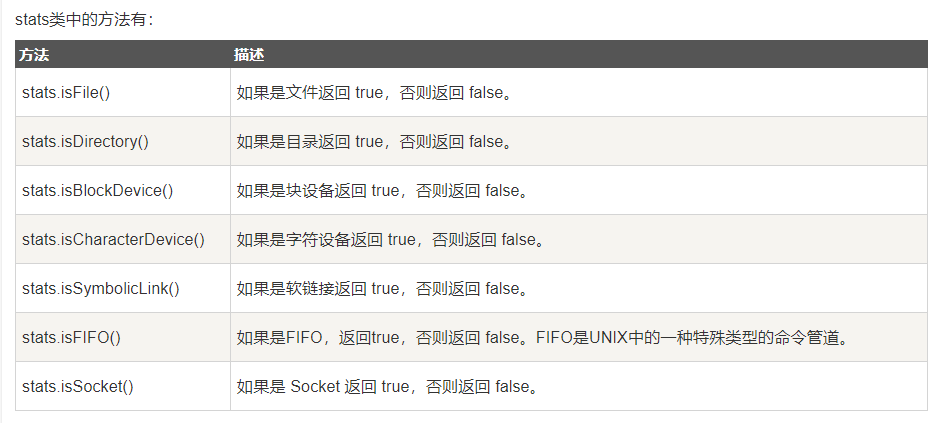

- Node.Js
Node.Js
Node.js 就是运行在服务端的 JavaScript。
Node.js 是一个基于Chrome JavaScript 运行时建立的一个平台。
Node.js 是一个事件驱动I/O服务端JavaScript环境，基于Google的V8引擎，V8引擎执行Javascript的速度非常快，性能非常好。
1.安装Node.js
-
下载Node.js:
Node.js中文网 -
安装node.js：
在Windows上安装时务必选择全部组件，包括勾选Add to Path -
执行语句：
在Windows环境下，打开命令提示符，然后输入node -v，出现版本号，表示安装正常。
C:\Users\IEUser>node -v
v8.11.1
2.NPM
1.认识NPM：
npm其实是Node.js的包管理工具（node.js package manager）。
当我们在Node.js上开发时，会用到很多别人写的JavaScript代码。
如果我们要使用别人写的某个包，每次都根据名称搜索一下官方网站，下载代码，解压，再使用，非常繁琐。
于是一个集中管理的工具应运而生：大家都把自己开发的模块打包后放到npm官网上，如果要使用，直接通过npm安装就可以直接用，不用管代码存在哪，应该从哪下载。
如果我们要使用模块A，而模块A又依赖于模块B，模块B又依赖于模块X和模块Y，npm可以根据依赖关系，把所有依赖的包都下载下来并管理起来。否则，靠我们自己手动管理，肯定既麻烦又容易出错。
常见的使用场景有以下几种：
①：允许用户从NPM服务器下载别人编写的三方包到本地使用。
②：允许用户从NPM服务器下载并安装别人编写的命令行程序到本地使用。
③：允许用户将自己编写的包或命令行程序上传到NPM服务器供别人使用。
npm已经在Node.js安装的时候顺带装好了
C:\>npm -v
5.6.0
C:\>npm
Usage: npm <command>
where <command> is one of:
access, adduser, bin, bugs, c, cache, completion, config,
ddp, dedupe, deprecate, dist-tag, docs, doctor, edit,
explore, get, help, help-search, i, init, install,
install-test, it, link, list, ln, login, logout, ls,
..........
2.使用NPM：
1.下载第三方包：
$ npm install 包名
3.命令行运行node程序：
- 编写hello.js文件：
'use strict'; //以严格模式运行JavaScript代码，避免各种潜在陷阱。 console.log('Hello, world.');
- 命令行运行该js文件：
C:\nodejs>node hello.js
Hello, world
4.使用严格模式
严格模式通过在脚本或函数的头部添加 "use strict"; 表达式来声明。
①：为什么使用严格模式:
- 消除Javascript语法的一些不合理、不严谨之处，减少一些怪异行为;
- 消除代码运行的一些不安全之处，保证代码运行的安全；
- 提高编译器效率，增加运行速度；
- 为未来新版本的Javascript做好铺垫。
②：使用严格模式：
如果在JavaScript文件开头写上'use strict';，那么Node在执行该JavaScript时将使用严格模式。
在服务器环境下，如果有很多JavaScript文件，每个文件都写上'use strict';很麻烦。我们可以给Nodejs传递一个参数，让Node直接为所有js文件开启严格模式：
node --use_strict calc.js
5.Node.js集成开发环境 : Visual Studio Code
VsCode中运行nodeJs代码的简单方法-->安装 Code Runner插件。6.模块
在Node环境中，一个.js文件就称之为一个模块（module）。
在编写每个模块时，都有require、exports、module三个预先定义好的变量可供使用。
编写模块的好处：
①：当一个模块编写完毕，就可以被其他地方引用。我们在编写程序的时候，也经常引用其他模块，包括Node内置的模块和来自第三方的模块。
②：使用模块还可以避免函数名和变量名冲突。相同名字的函数和变量完全可以分别存在不同的模块中，因此，我们自己在编写模块时，不必考虑名字会与其他模块冲突。
DEMO：
①：编写hello 模块：
hello.js
'use strict'; var s = 'Hello'; console.info(s); function greet(name) { console.log(s + ', ' + name + '!'); } module.exports = greet;
② 编写main模块，并调用hello模块：
main.js:
'use strict'; // 引入hello模块: var greet = require('./hello'); // 不要忘了写相对目录! var s = 'Michael'; greet(s); // Hello, Michael!
1.require 变量：
- 加载模块（js文件）：
require函数用于在当前模块中加载别的模块，传入一个模块名，返回一个模块导出对象。模块名可使用相对路径（以./开头），或者是绝对路径（以/或C:之类的盘符开头）。
另外，模块名中的.js扩展名可以省略。
var he1 = require('./hello'); var he2 = require('./hello.js');
- 加载json文件：
var data = require('./data.json');
2. exports 变量：
exports对象用于导出模块公有方法和属性。别的模块通过require函数使用当前模块时得到的就是当前模块的exports对象。
module.exports 与 exports 具有相同功能。因为exports是module的属性之一。
function greet(name) { console.log(s + ', ' + name + '!'); } module.exports = greet; //导出一个函数 exports.hello = function () { //导出一个匿名函数 console.log('Hello World!'); }; var a="sss"; exports=a; //导出一个变量
3.module变量：
通过module对象可以访问到当前模块的一些相关信息，但最多的用途是替换当前模块的导出对象。
module.exports = function () { //模块默认导出对象被替换为一个函数。 console.log('Hello World!'); };
4.小结：
模块初始化:
一个模块中的JS代码仅在模块第一次被使用时执行一次，并在执行过程中初始化模块的导出对象。之后，缓存起来的导出对象被重复利用。
主模块:
通过命令行参数传递给NodeJS以启动程序的模块被称为主模块。主模块负责调度组成整个程序的其它模块完成工作。
7.包：
JS模块的基本单位是单个JS文件，但复杂些的模块往往由多个子模块组成。为了便于管理和使用，我们可以把由多个子模块组成的大模块称做包，并把所有子模块放在同一个目录里。
在组成一个包的所有子模块中，需要有一个入口模块，入口模块的导出对象被作为包的导出对象。
例如有以下目录结构(lib文件下有cat文件，该文件里有三个模块):
- /home/user/lib/
- cat/
head.js
body.js
main.js
main.js作为入口模块，其内容如下：
var head = require('./head'); //导入head模块 var body = require('./body'); //导入body模块 exports.create = function (name) { //把main模块的暴露出去 return { name: name, head: head.create(), body: body.create() }; };
其他文件中使用：
require('/home/user/lib/cat/main')
8.标准工程目录：
一个标准的工程目录都看起来像下边这样:
- /home/user/workspace/node-echo/ # 工程目录
- bin/ # 存放命令行相关代码
node-echo
+ doc/ # 存放文档
- lib/ # 存放API相关代码
echo.js
- node_modules/ # 存放三方包
+ argv/
+ tests/ # 存放测试用例
package.json # 元数据文件
README.md # 说明文件
9. global全局对象，process进程对象：
①：global全局对象:
在Node.js环境中，也有唯一的全局对象，叫global，这个对象的属性和方法也和浏览器环境的window不同。进入Node.js交互环境，可以直接输入：
> global.console
Console {
log: [Function: bound ],
info: [Function: bound ],
warn: [Function: bound ],
error: [Function: bound ],
dir: [Function: bound ],
time: [Function: bound ],
timeEnd: [Function: bound ],
trace: [Function: bound trace],
assert: [Function: bound ],
Console: [Function: Console] }
②：process进程对象:
process也是Node.js提供的一个对象，它代表当前Node.js进程。通过process对象可以拿到许多有用信息：
> process === global.process;
true
> process.version;
'v5.2.0'
> process.platform;
'darwin'
> process.arch;
'x64'
> process.cwd(); //返回当前工作目录
'/Users/michael'
> process.chdir('/private/tmp'); // 切换当前工作目录
undefined
> process.cwd();
'/private/tmp'
10. Node.js 核心模块：
1.fs 内置模块---文件系统模块：
Node.js 文件系统（fs 模块）模块中的方法均有异步和同步版本。
1.读取文件数据：
①：在同目录下创建 1.txt文件：
1.txt:
this is a 1.txt file
②：读取1.txt文件：
main.js
var fs = require("fs"); // 异步读取 fs.readFile('1.txt', function (err, data) { if (err) { return console.error(err); } console.log("异步读取: " + data.toString()); }); // 同步读取 var data = fs.readFileSync('1.txt'); console.log("同步读取: " + data.toString()); console.log("程序执行完毕。");
③：运行结果：

2.获取文件属性：
语法
以下为通过异步模式获取文件信息的语法格式：
fs.stat(path, callback);
path: 文件路径。
callback ：回调函数。带有两个参数如：(err, stats), stats 是 fs.Stats 对象。
Demo:
var fs = require("fs"); //引入内置模块js console.log("准备打开文件！"); fs.stat('./1.txt', function (err, stats) { if (err) { return console.error(err); } console.log(stats); console.log("读取文件信息成功！"); // 检测文件类型 console.log("是否为文件(isFile) ? " + stats.isFile()); console.log("是否为目录(isDirectory) ? " + stats.isDirectory()); });


3.写入文件：
异步模式下写入文件的语法格式([...]表示参数可有可无)：
fs.writeFile(filename, data, [options], [callback(err)])
参数名称解析：
filename - (String) - 文件名称
data - (String | Buffer) - 将要写入的内容，可以使字符串 或 buffer数据。
options - (Object) - option数组对象，包含：
----encoding - (string) - 可选值，默认 ‘utf8′，当data使buffer时，该值应该为 ignored。
----mode - (Number) - 文件读写权限，默认值 438
----flag - (String) - 默认值 ‘w'
callback - {Function} - 回调，传递一个异常参数err。

writeFile 直接写入文件默认是 w 模式，所以如果文件存在，该方法写入的内容会覆盖旧的文件内容。
DEMO:
```js var fs = require("fs");console.log("准备写入文件");
fs.writeFile('./1.txt', '我是通 过fs.writeFile 写入文件的内容', function(err) {
if (err) {
return console.error(err);
}
console.log("数据写入成功！");
console.log("--------我是分割线-------------");
console.log("读取写入的数据！");
fs.readFile('./1.txt', function (err, data) {
if (err) {
return console.error(err);
}
console.log("异步读取文件数据: " + data.toString());
});
});
<h3>
<font color="red">
ps:这里的写入文件数据是把之前的数据删除，在重新写入数据。因为options参数的flag的属性的默认值为 "w",如果文件存在，该方法写入的内容会覆盖旧的文件内容。
</font>
</h3>
运行结果：

#### 4. 删除文件：
<p class="mume-header " id="4-删除文件"></p>
语法
以下为删除文件的语法格式：
`fs.unlink(path, callback);`
> path - 文件路径。
> callback - 回调函数，没有参数。
DEMO:
```js
var fs = require("fs");
console.log("准备删除文件！");
fs.unlink('./1.txt', function(err) {
if (err) {
return console.error(err);
}
console.log("文件删除成功！");
});

5.创建目录：
语法
以下为创建目录的语法格式：
fs.mkdir(path,[mode], callback)
path - 文件路径。
mode - 设置目录权限，默认为 0777。
callback - 回调函数，没有参数。
DEMO：
var fs = require("fs"); console.log("创建目录 ./testA/testB/"); fs.mkdir("./testA/testB/",function(err){ if (err) { return console.error(err); } console.log("目录创建成功。"); });

6.读取目录信息：
语法
以下为读取目录的语法格式：
fs.readdir(path, callback);
path - 文件路径。
callback - 回调函数,有两个参数(err, files)，err 为错误信息，files 为 目录下的文件数组列表。
DEMO:
var fs = require("fs"); console.log("查看 /test 目录"); fs.readdir("./test/",function(err, files){ if (err) { return console.error(err); } files.forEach( function (file){ //循环输出文件信息列表 console.log(file); }); });

7.删除空的目录:
语法
以下为删除目录的语法格式：
fs.rmdir(path, callback);
path - 文件路径。
callback - 回调函数，没有参数。
ps:该方法为删除空的目录。
DEMO:
var fs = require("fs"); // 执行前创建一个空的 ./test 目录 console.log("准备删除目录 ./test"); fs.rmdir("./test",function(err){ //删除当前目录下的test文件夹 if (err) { return console.error(err); }else{ console.log("删除成功"); } });

2.Buffer(缓冲区)：
在处理像TCP流或文件流时，必须使用到二进制数据。因此在 Node.js中，定义了一个 Buffer 类，该类用来创建一个专门存放二进制数据的缓存区。
1.创建Buffer类：
Buffer 提供了以下 API 来创建 Buffer 类：
Buffer.alloc(size[fill],[encoding]); // 返回一个指定大小的 Buffer 实例，如果没有设置 fill，则默认填满 0 Buffer.allocUnsafe(size); // 返回一个指定大小的 Buffer 实例，但是它不会被初始化，所以它可能包含敏感的数据 Buffer.allocUnsafeSlow(size); Buffer.from(array); // 返回一个被 array 的值初始化的新的 Buffer 实例（传入的 array 的元素只能是数字，不然就会自动被 0 覆盖） Buffer.from(arrayBuffer,[byteOffset],[length]); //返回一个新建的与给定的 ArrayBuffer 共享同一内存的 Buffer。 Buffer.from(buffer); //复制传入的 Buffer 实例的数据，并返回一个新的 Buffer 实例 Buffer.from(string,[encoding]); //返回一个被 string 的值初始化的新的 Buffer 实例
DEMO:
// 创建一个长度为 10、且用 0 填充的 Buffer。 const buf1 = Buffer.alloc(10); console.log(buf1); // 创建一个长度为 10、且用 1 填充的 Buffer。 const buf2 = Buffer.alloc(10, 1); console.log(buf2); // 创建一个包含 [0x1, 0x2, 0x3] 的 Buffer。 const buf3 = Buffer.from([1, 2, 3]); console.log(buf3); // 创建一个包含 UTF-8 字节 "abcd" 的 Buffer。 const buf4 = Buffer.from('abcd'); console.log(buf4); // 创建一个包含 Latin-1 字节 "abcd" 的 Buffer。 const buf5 = Buffer.from('abcd', 'latin1'); console.log(buf5);
运行结果：

PS:还有一些被废弃的创建Buffer的方法，如下所示
方法 1
以下是创建10个字节的Buffer缓冲的语法：
var buf = new Buffer(10);
方法 2
下面是用来从给定数组创建一个缓冲区的语法：
var buf = new Buffer([10, 20, 30, 40, 50]);
方法 3
下面是用来从给定的字符串和可选的编码类型创建缓冲区的语法：
var buf = new Buffer("Simply Easy Learning", "utf-8");
“UTF8”是默认的编码，其它的编码:"ascii", "utf8", "utf16le", "ucs2", "base64" 或 "hex".
2.向缓冲区写入数据：
语法
写入 Node 缓冲区的语法如下所示：
var buf = Buffer.alloc(10);; //创建10个字节大小的缓冲区 buf.write(string,[offset],[length],[encoding]); //[]表示该参数可有可无
string - 写入缓冲区的字符串。
offset - 缓冲区开始写入的索引值，默认为 0 。
length - 写入的字节数，默认为 buffer.length
根据 encoding 的字符编码写入 string 到 buf缓冲区 中的 offset 位置。 length 参数是写入的字节数。 如果 buf 没有足够的空间保存整个字符串，则只会写入 string 的一部分。 其他部分解码的字符不会被写入。encoding - 使用的编码。默认为 'utf8' 。
DEMO:
var buf = Buffer.alloc(10);; //创建10个字节大小的缓冲区 len = buf.write("www.runoob.com"); console.log("写入字节数 : "+ len);

3.从缓冲区读取数据：
语法
读取 Node 缓冲区数据的语法如下所示：
buf.toString([encoding],[start],[end]); //[]表示该参数可有可无
encoding - 使用的编码。默认为 'utf8' 。
start - 指定开始读取的索引位置，默认为 0。
end - 结束位置，默认为缓冲区的末尾。
DEMO:
var buf = Buffer.alloc(20);; buf.write("www.runoob.一二三四五六"); //向缓冲区写入数据 console.log( buf.toString('ascii')); // 读取数据以ascii编码的方式 console.log( buf.toString('ascii',0,5)); // 读取数据从第0个到第4个，以ascii编码的方式 console.log( buf.toString('utf8',0,5)); console.log( buf.toString(undefined,0,5));

4.缓冲区合并:
语法
Node 缓冲区合并的语法如下所示：
Buffer.concat(list,[totalLength]);
list - 用于合并的 Buffer 对象数组列表。
totalLength - 指定合并后Buffer对象的总长度。
DEMO:
var buffer1 = Buffer.from(('菜鸟教程')); var buffer2 = Buffer.from(('www.runoob.com')); var buffer3 = Buffer.concat([buffer1,buffer2]); console.log("buffer3 内容: " + buffer3.toString());
运行结果：
buffer3 内容: 菜鸟教程www.runoob.com
5.拷贝缓冲区:
语法
Node 缓冲区拷贝语法如下所示：
buf.copy(targetBuffer,[targetStart],[sourceStart],[sourceEnd]);
targetBuffer - 要拷贝的 Buffer 对象。
targetStart - 数字, 可选, 默认: 0
sourceStart - 数字, 可选, 默认: 0
sourceEnd - 数字, 可选, 默认: buffer.length
没有返回值
DEMO:
var buf1 = Buffer.from('abc'); var buf2 = Buffer.from('RUNOOB'); //将 buf2 插入到 buf1 指定位置上 buf2.copy(buf1, 2); console.log(buf1.toString());
运行结果:abRUNOOB
6.缓冲区剪切：
Node 缓冲区剪切语法如下所示：
buf.slice([start],[end]);
start - 数字, 可选, 默认: 0
end - 数字, 可选, 默认: buffer.length
返回一个新的缓冲区，它和旧缓冲区指向同一块内存，但是从索引 start 到 end 的位置剪切。
DEMO:
var buffer1 = Buffer.from('runoob'); // 剪切缓冲区 var buffer2 = buffer1.slice(0,2); //从索引第0-1个进行剪切。 console.log("buffer2 content: " + buffer2.toString());
运行结果：buffer2 content: ru
7.缓冲区长度:
语法：
buf.length;
DEMO:
var buffer = Buffer.from('www.runoob.com'); // 缓冲区长度 console.log("buffer length: " + buffer.length);
运行结果：buffer length: 14
3.Stream（数据流）
当内存中无法一次装下需要处理的数据时，或者一边读取一边处理更加高效时,我们就需要用到数据流。NodeJS中通过各种Stream来提供对数据流的操作。
1. 从流中读取数据:
①: 创建 1.txt 文件，内容如下：
this is 1.txt
②: EMO:
var fs = require("fs"); //引入fs内置模块 var data = ''; // 创建可读流 var readerStream = fs.createReadStream('1.txt'); // 设置编码为 utf8。 readerStream.setEncoding('UTF8'); // 处理流事件 --> data, end, and error readerStream.on('data', function(chunk) { data += chunk; }); readerStream.on('end',function(){ console.log(data); }); readerStream.on('error', function(err){ console.log(err.stack); }); console.log("程序执行完毕");
③：运行结果：
程序执行完毕
this is 1.txt
2.写入流：
DEMO:
var fs = require("fs"); var data = '菜鸟教程官网地址：www.runoob.com'; // 创建一个可以写入的流，写入到文件 output.txt 中 var writerStream = fs.createWriteStream('output.txt'); // 使用 utf8 编码写入数据data 到写入流指定的文件中。 writerStream.write(data,'UTF8'); // 标记文件末尾 writerStream.end(); // 处理流事件 --> data, end, and error writerStream.on('finish', function() { console.log("写入完成。"); }); writerStream.on('error', function(err){ console.log(err.stack); }); console.log("程序执行完毕");
运行结果：
程序执行完毕
写入完成。
3.管道流-实现文件内容的互相复制：
DEMO(读取一个文件内容并将内容写入到另外一个文件中):
①：创建文本文件 1.txt,2.txt:
1.txt:
this is 1.txt
2.txt:
this is 2.txt
②：代码
var fs = require("fs"); //引入fs内置模块 // 创建一个可读流 var readerStream = fs.createReadStream('1.txt'); // 创建一个可写流 var writerStream = fs.createWriteStream('2.txt'); // 管道读写操作 // 读取可读流的 1.txt 文件内容，并将内容写入到可写流的 2.txt 文件中 readerStream.pipe(writerStream); console.log("程序执行完毕");
③：运行结果:
程序执行完毕
④：2.txt文件的内容：
this is 1.txt
this is 2.txt
4.util 模块---提供常用函数的集合：
1.util.inspect
语法：
util.inspect(object,[showHidden],[depth],[colors]);
object: 即要转换的对象。
showHidden: 是一个可选参数，如果值为 true，将会输出更多隐藏信息。
depth 表示最大递归的层数.
如果color 值为 true，输出格式将会以ANSI 颜色编码，通常用于在终端显示更漂亮 的效果。
DEMO:
var util = require('util'); function Person() { this.name = 'byvoid'; this.toString = function() { return this.name; }; } var obj = new Person(); console.log("输出正常信息："+util.inspect(obj)); console.info("================="); console.log("输出更多信息："+util.inspect(obj, true)); //这里的showHidden参数为true
运行结果：

2.util.isArray(object);
如果给定的参数 "object" 是一个数组返回true，否则返回false。
var util = require('util'); util.isArray([]); // true util.isArray(new Array); // true util.isArray({}); // false
3.util.isRegExp(object);
如果给定的参数 "object" 是一个正则表达式返回true，否则返回false。
var util = require('util'); util.isRegExp(/some regexp/); // true util.isRegExp(new RegExp('another regexp')); // true util.isRegExp({}); // false
4.util.isDate(object)
如果给定的参数 "object" 是一个日期返回true，否则返回false。
var util = require('util'); util.isDate(new Date()); // true util.isDate({}) // false
5.util.isError(object);
如果给定的参数 "object" 是一个错误对象返回true，否则返回false。
var util = require('util'); util.isError(new Error()) // true util.isError(new TypeError()) // true util.isError({ name: 'Error', message: 'an error occurred' }) // false
11. Node.js 函数：
Node.js中函数的使用与Javascript类似。
1.把函数作为另一个函数的变量:
DEMO:
function say(word) { //定义一个say函数。 console.log(word); } /* 定义一个函数execute. ---someFunction 参数：表示接受另一个函数作为参数。、 --- value 参数：接受一个值,作为参数函数的参数。 */ function execute(someFunction, value) { someFunction(value); } /* 1. 把 say 函数作为execute函数的第一个变量进行了传递。这里传递的不是 say 的返回值，而是 say 本身。 2. say 就变成了execute 中的本地变量 someFunction。 3. execute可以通过调用 someFunction() （带括号的形式）来使用 say 函数。 */ execute(say, "Hello");
运行结果：
Hello
2.匿名函数：
DEMO:
function execute(someFunction, value) { someFunction(value); } /* 在 execute 接受第一个参数的地方直接定义了我们准备传递给 execute 的函数。 这样的函数参数不用写函数名，称为匿名函数。 */ execute(function(word){ console.log(word) }, "Hello");
12.全局对象：
Node.js 中的全局对象是 global，所有全局变量（除了 global 本身以外）都是 global 对象的属性。
在 Node.js 我们可以直接访问到 global的属性，而不需要引入它。
1.全局变量： __filename
__filename 表示当前正在执行的脚本的文件绝对路径。
main.js
// 输出全局变量 __filename 的值 console.log( __filename );
运行结果：
/web/com//nodejs/main.js
2.全局变量： __dirname
__dirname 表示当前执行脚本所在的目录。
main.js
// 输出全局变量 __dirname 的值 console.log( __dirname );
运行结果：
/web/com/runoob/nodejs
3.全局函数： setTimeout(cb, ms); ---执行一次的定时器
作用是在指定的毫秒(ms)数后执行指定函数(cb)。
返回值：返回一个代表该定时器的变量。
PS:setTimeout() 只执行一次指定函数。
DEMO:
function printHello(){ console.log( "Hello, World!"); } // 两秒后执行以上函数 setTimeout(printHello, 2000);
运行结果：
Hello, World!
4.全局函数：clearTimeout(t);
用于停止一个之前通过 setTimeout()函数创建的定时器。 参数 t 是通过 setTimeout() 函数创建的定时器的返回值，代表该定时器本身。
DEMO:
function printHello(){ console.log( "Hello, World!"); } // 两秒后执行以上函数 var t = setTimeout(printHello, 2000); // 通过定时器的返回值，来清除定时器 clearTimeout(t);
5.全局函数：setInterval(cb, ms) ---执行多次的定时器
作用是在指定的毫秒(ms)数后执行指定函数(cb)。返回一个代表定时器的句柄值。
etInterval() 方法会不停地调用函数，直到使用clearInterval()函数来清除或窗口被关闭。
DEMO:
function printHello(){ console.log( "Hello, World!"); } // 每隔两秒执行以上函数, setInterval(printHello, 2000);
运行结果
Hello, World! Hello, World! Hello, World! Hello, World! Hello, World! ……
以上程序每隔两秒就会输出一次"Hello, World!"，且会永久执行下去，直到你按下 ctrl + c 按钮。
6.console
console 用于提供控制台标准输出.